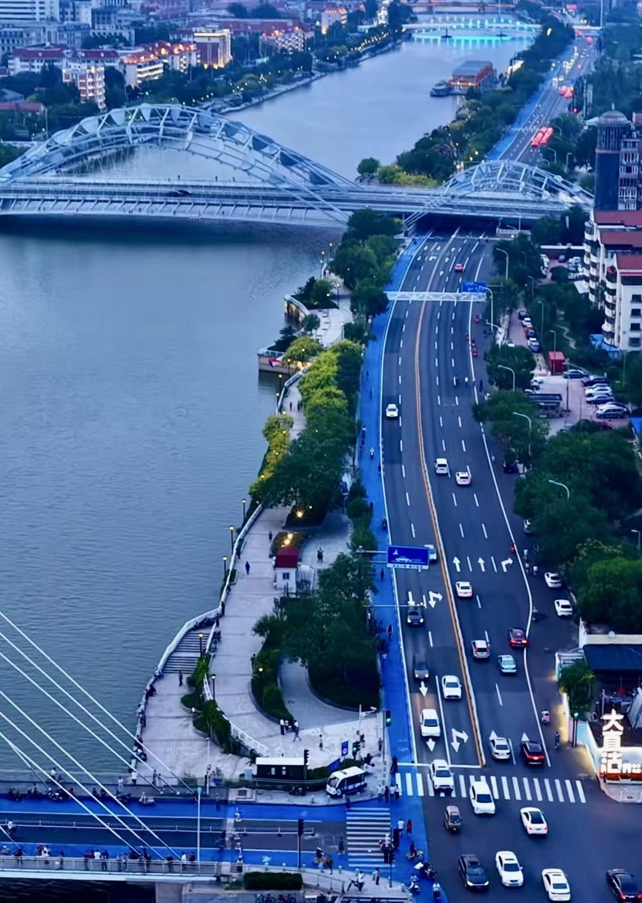

Start by your goal: choose a scenic city run, a beginner-friendly route, a steady daily mileage loop,
or a longer coastal session for endurance training. The best route is the one that matches your fitness level and how you want to feel during the run.
4 routes3–8 kmRiverside · park · coast

Night runTap for tips
Lights on the water, a wide promenade, and a skyline that keeps you moving.
Riverside7.7 km
Haihe Riverside Run
A smooth urban route from Tianjin Eye to Jinwan Plaza with great city views.
Choose this route if you want a scenic urban run with wide views and a relaxed evening rhythm.
Best for beginners
South Cuiping Park
Choose this route if you want a short, comfortable session with soft footing and low pressure.
Best for daily mileage
Water Park Lakeside
Choose this route if you want a calm, sustainable run that fits naturally into a weekly routine.
Best for endurance
Binhai TEDA Coastal
Choose this route if you want a longer, steady run that supports pace control and distance building.
7-day running plan
A repeatable week built around one easy run, one rhythm session, one long run, and enough
rest to keep going. Swap days freely — the order matters less than the balance.